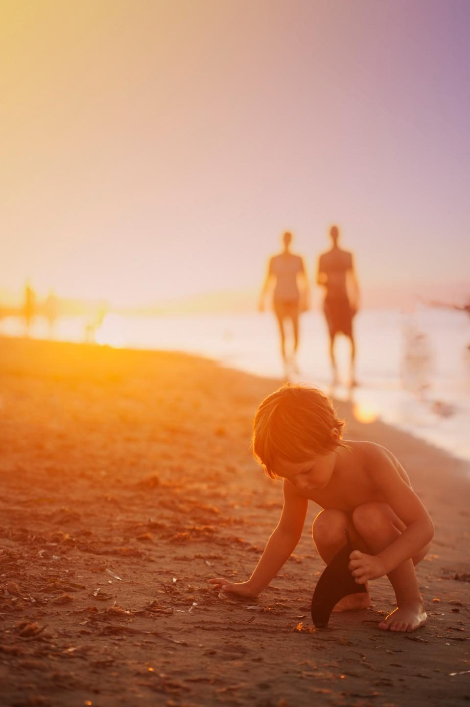

Санур с детьми: чем заняться — полный гайд для семьи
Автор: [Автор], проверено: [Координатор нянь] · Обновлено в сентябре 2026
Санур — самый спокойный и удобный для прогулок район Бали: вода защищена рифом, вдоль моря идёт ровная набережная, всё рядом. Рассказываем, как провести здесь дни с детьми любого возраста.

Пляжи
Риф гасит волны, поэтому Санур — одно из самых удобных мест на Бали для купания малышей. Любимые пляжи семей — Синдху, Семаванг и Мертасари. Купаться лучше в прилив: в отлив вода уходит далеко за риф.
Парки и детские площадки
У многих кафе на набережной есть детские площадки, а в самые жаркие часы выручают крытые игровые центры.
Активности на воде
Сапборд, снорклинг и уроки плавания отлично подходят для спокойной воды Санура. Кайт и виндсёрфинг — для детей постарше в ветреный сезон.
Если идёт дождь
Мастер-классы по рукоделию и кулинарии, игровые центры и торговые центры соседнего Денпасара.
Вечером
Ночной рынок Синдху, закат на набережной — или ужин вдвоём, пока няня укладывает детей.
План на 3 дня
День 1: утро на пляже, бассейн и дневной сон, вечерняя прогулка. День 2: снорклинг или сап, потом мастер-класс. День 3: поездка в Bali Zoo или аквапарк и свободный вечер для родителей.